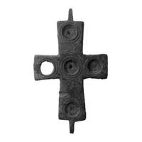
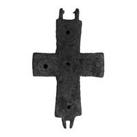

Catalog › CE-0286 · KIR2023-17
Encolpion bivalv de bronz cu cinci locașuri, cat. 17, Muzeul Kırklareli
sec. XI–XII (1001–1200) · loc necunoscut · Muzeul Kırklareli (Kırklareli Müzesi), Turcia, inv. 2019/10-11
double-sided reliquary cross (enkolpion), bronz; c. XI–XII (1001–1200); find spot unknown; kept at Muzeul Kırklareli (Kırklareli Müzesi), Turcia.




Identificare
- Categorie
- Encolpion bivalv (relicvar)
- Material
- Bronz
- Tehnică
- Gravare (incizie)
- Stare
- Corodată
- Dimensiuni
- Î 61 × L 36 mm
Iconografie
- Avers
- Ornament geometric
- Descriere avers
- Brațul orizontal mai scurt decât cel vertical; cinci locașuri (patru pe brațe, unul în centru) pentru sticlă sau piatră, evidențiate prin câte două cercuri concentrice incizate; între locașurile brațului vertical trei motive de câte două cercuri concentrice. Piatra sau sticla nu s-au păstrat.
- Revers
- Ornament geometric
- Descriere revers
- Cercuri concentrice incizate, în dreptul locașurilor din față.
- Limba
- Fără inscripție
Datare și atribuire
- Datare
- sec. XI–XII (1001–1200)
- Centru
- Balcani
- Tipologie
- Pitarakis 2006, tip IV
Descoperire
- Context
- Colecție (fără context)
- Coordonate
- 41.7351° N, 27.2252° E
- Precizia locului
- Loc de păstrare (loc de descoperire incert)
Păstrare și referințe
- Colecție
- Muzeul Kırklareli (Kırklareli Müzesi), Turcia
- Nr. inventar
- 2019/10-11
- Bibliografie
- S. Uygun Yazıcı, Kırklareli Müzesi Bizans Dönemi Madeni Haçları, în „Art-Sanat”, 20, 2023, p. 613–640 [Uygun Yazıcı 2023], p. 630, cat. nr. 17, reprodusă la G. 17 (p. 631). DOI: 10.26650/artsanat.2023.20.1290437
- Figura
- G. 17
- Planșe
- Uygun Yazıcı 2023, p. 631
- Analogii
- Pitarakis 2006, cat. 612, 614–616 (p. 378–379); Ucraina; Muzeul Canellopoulos Atena (după Uygun Yazıcı 2023)
- Observații
- Ambele fețe sunt păstrate; în unele locuri coroziune. Autorul îl dă printre piesele de origine balcanică, cu analogii și în Anatolia. Intrat în muzeu prin cumpărare; sursa spune că toate piesele provin din Kırklareli și districtele din jur, fără loc precis de descoperire. Locul descoperirii nu e cunoscut cu precizie; punctul de pe hartă marchează locul de păstrare (Muzeul Kırklareli), nu locul descoperirii. Coordonate: nu sunt date în sursă.
Citare: Corpus Encolpiorum, CE-0286, Encolpion bivalv de bronz cu cinci locașuri, cat. 17, Muzeul Kırklareli, --root/piese/KIR2023-17/ (accesat 2026-10-20).